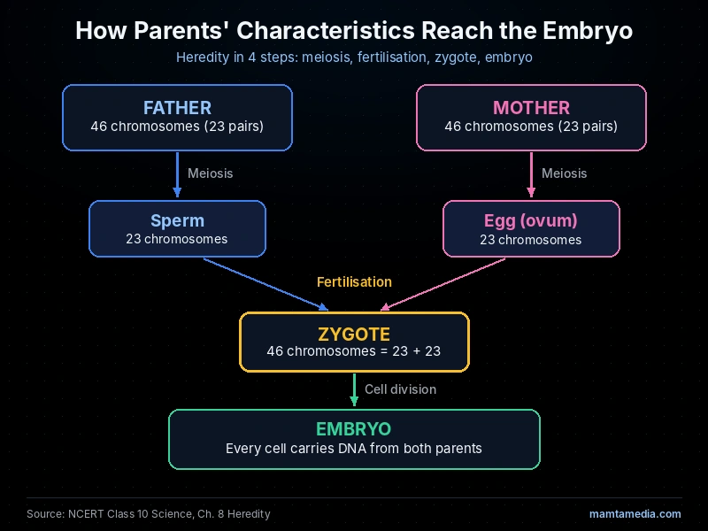
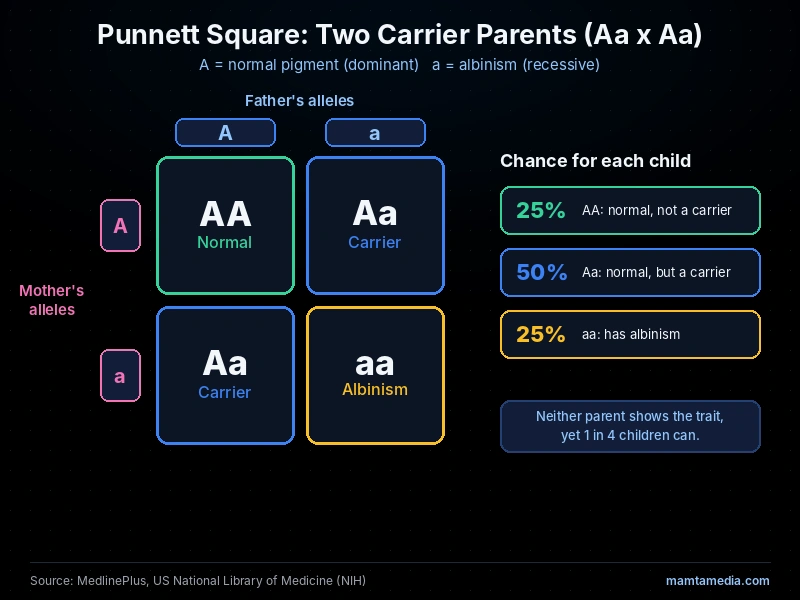
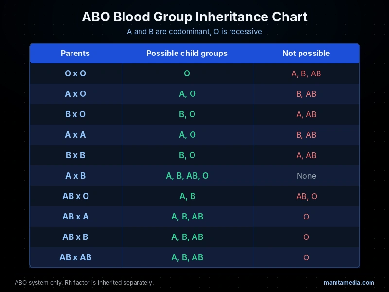
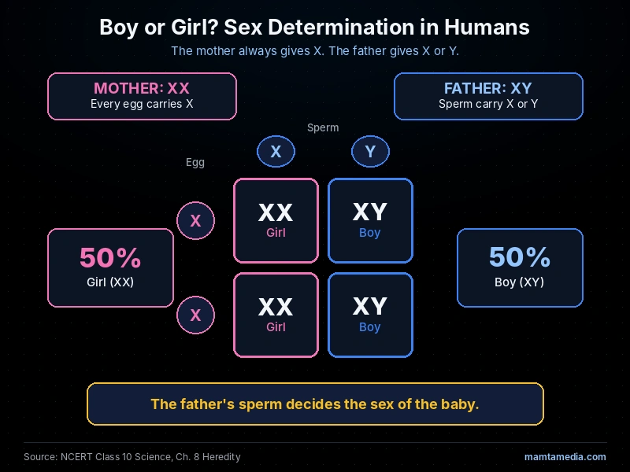

How Do the Characteristics of Mother and Father Get Passed to a Child? (Class 10 Answer + Real Examples)
Quick Answer
How do the characteristics of mother and father pass to a child? The characteristics of mother and father pass to a child through genes carried on chromosomes. During fertilisation, the mother's egg and the father's sperm each contribute 23 chromosomes, forming a zygote with 46. These chromosomes carry about 19,900 protein-coding genes, and the pairing of both parents' gene versions (alleles) decides each trait.
Source: MedlinePlus Genetics, NIH
A child can have her father's eyes, her mother's blood group and a height that matches neither parent. None of that is random luck. It follows a set of rules that biologists have tested for more than 150 years, and those rules are exactly what your Class 10 question is asking about.
This guide by Mamta Media gives you two things at once: an answer that scores full marks in the board exam, and an explanation clear enough that you could explain it to your parents at dinner. We will also correct a mistake that appears on some of the most viewed answer pages online.
The 4-Step Journey From Parents to Embryo
Here is how the characteristics of mother and father get transmitted to a human embryo, step by step.
Step 1: Gamete formation (meiosis). Most cells in your body have 46 chromosomes arranged in 23 pairs. Sex cells are different. Through a special cell division called meiosis, the father's testes make sperm and the mother's ovaries make eggs, and each of these carries only 23 chromosomes, one from every pair.
Step 2: Fertilisation. When a sperm fuses with an egg, their chromosome sets combine.
Step 3: Zygote formation. The fused cell, called a zygote, now has the full 46 chromosomes again: 23 from the mother and 23 from the father.
Step 4: Embryo development. The zygote divides again and again. Every new cell receives a copy of the same combined DNA, so the instructions from both parents reach every part of the growing embryo.
Why halve the number first? If eggs and sperm carried 46 chromosomes each, the baby would have 92, and the number would double in every generation. Meiosis keeps the human count fixed at 46.

Four Words That Unlock This Chapter
Students often mix these terms up in answers. Learn each one once, properly.
| Term | Simple meaning | Hindi term | Example |
|---|---|---|---|
| DNA | The chemical that stores all inherited instructions | डीएनए | The "recipe book" in every cell |
| Gene | A section of DNA that controls one trait or protein | जीन | The gene that decides your ABO blood group |
| Chromosome | A thread-like structure that packs DNA inside the nucleus | गुणसूत्र | Humans have 23 pairs |
| Allele | A slightly different version of the same gene | युग्मविकल्पी | The A, B and O versions of the blood group gene |
You carry two alleles for most genes: one from your mother and one from your father. Which one shows up depends on whether it is dominant or recessive, which brings us to Mendel.
Which Parent's Trait Shows Up? Mendel's Rules Applied to Humans
Gregor Mendel worked this out in the 1860s using pea plants. He found that a dominant allele shows its effect even if only one copy is present, while a recessive allele shows up only when a child receives two copies, one from each parent.
The trait you can see (tall, short, albino) is the phenotype. The pair of alleles behind it (TT, Tt, tt) is the genotype.
A worked human example: albinism
Most textbook examples use eye colour, but eye colour is controlled by many genes, so a simple cross gives misleading answers. A cleaner human example is oculocutaneous albinism, which follows a simple recessive pattern.
Let A be the normal pigment allele (dominant) and a the albinism allele (recessive). Imagine both parents have normal skin but each carries one hidden albinism allele (genotype Aa). Here is the Punnett square:
| Father: A | Father: a | |
|---|---|---|
| Mother: A | AA (normal) | Aa (normal, carrier) |
| Mother: a | Aa (normal, carrier) | aa (albinism) |
The result for each pregnancy: - 25% chance: AA, normal and not a carrier - 50% chance: Aa, normal but a carrier - 25% chance: aa, the child has albinism
This is why a child can show a trait that neither parent shows. Both parents were silent carriers. The 1 in 4 chance applies to every pregnancy separately, like a fresh toss of a coin each time.

Blood Group Inheritance: The Table Parents Actually Search For
Blood group inheritance is one of the most practical examples of heredity, and it adds a twist that Mendel's peas did not show.
The ABO gene sits on chromosome 9 and has three alleles: A, B and O. - A and B are codominant: if a child gets both, both show, giving blood group AB. - O is recessive: a child is group O only after receiving an O allele from both parents.
| Parents' blood groups | Possible child blood groups | Not possible |
|---|---|---|
| O × O | O | A, B, AB |
| A × O | A, O | B, AB |
| B × O | B, O | A, AB |
| A × A | A, O | B, AB |
| B × B | B, O | A, AB |
| A × B | A, B, AB, O | None |
| AB × O | A, B | AB, O |
| AB × A | A, B, AB | O |
| AB × B | A, B, AB | O |
| AB × AB | A, B, AB | O |
Real-life question: "My mother is A and my father is B, but I am O. Is that possible?" Yes. If your mother is genotype AO and your father is BO, each can pass on their hidden O allele, giving you OO.
This table covers the ABO system only. The Rh factor (positive or negative) is controlled separately. Rare genetic variants can also produce exceptions, so blood groups alone are never used to confirm or rule out parentage.

Is It Really 50-50? Where Mother and Father Contribute Differently
For the 22 pairs of non-sex chromosomes (autosomes), the split is equal: one chromosome of each pair from each parent. But three areas break the even split.
1. Mitochondrial DNA comes only from the mother. Mitochondria, the energy factories of the cell, carry their own small set of DNA. A child gets it only from the mother's egg, so only mothers pass mitochondrial variants to their children.
2. Sons get their X chromosome only from the mother. This is why X-linked traits such as red-green colour blindness and haemophilia show up far more often in boys. A boy has one X, so a single altered copy is enough to cause the condition. Fathers cannot pass X-linked traits to their sons, because they give sons a Y, not an X. In populations of Northern European ancestry, red-green colour blindness affects about 8% of males but only 0.5% of females.
3. The Y chromosome passes only from father to son. Any variant on the Y chromosome travels down the male line unchanged.
So, genetically, you are close to half and half, but not perfectly so.
Boy or Girl? Why the Father's Chromosome Decides
Humans have one pair of sex chromosomes. Females are XX and males are XY.
- Every egg from the mother carries an X.
- Half of the father's sperm carry an X and half carry a Y.
If an X-carrying sperm fertilises the egg, the child is XX, a girl. If a Y-carrying sperm does it, the child is XY, a boy. The sex of the baby is therefore decided by the father's sperm, not the mother.
A common mistake to avoid: Some popular answer pages say the "X from the mother and Y from the father fuse" as if the mother could give either chromosome. She cannot. The mother always gives an X. Only the father's contribution varies.
This has a social side too. Blaming a mother for not having a son has no scientific basis at all.

Why Siblings Don't Look Exactly Alike
If both children get half their DNA from the same two parents, why does one brother look like a photocopy of his father while the sister looks nothing like him? Three reasons:
- Independent assortment. During meiosis, each of the 23 chromosome pairs splits randomly. That alone gives every parent 2²³, or 8,388,608, possible chromosome combinations in their eggs or sperm.
- Crossing over. Before splitting, paired chromosomes swap small segments, creating brand-new combinations of alleles that did not exist in either parent.
- Random fertilisation. Any one of millions of possible sperm can meet any one of millions of possible eggs.
Multiply 8.4 million by 8.4 million and you get roughly 70 trillion combinations for a single couple, before crossing over is even counted. That is why siblings share many features but are never genetic copies.
The one exception is identical twins. They form when a single zygote splits into two, so they start with the same DNA.
Genes vs. Environment: What Parents Pass On and What They Don't
Genes set the possibilities. Environment decides how much of that potential shows up.
Height is a good example. Scientists estimate that about 80% of a person's height is determined by inherited DNA variations, and more than 700 gene variants linked to height have already been found. The remaining share depends on factors such as childhood nutrition, infections, access to healthcare and the mother's health during pregnancy. A child with "tall genes" who is poorly nourished may not reach that height.
Intelligence is even more mixed. According to the NIH, it is shaped by both genes and environment, with many genes each having a small effect. Home life, parenting, education and nutrition all matter strongly.
Acquired traits are not inherited. A father's gym-built muscles, a mother's fluency in French, or a scar from an accident are changes in body cells, not in the DNA of eggs or sperm. They cannot pass to the next generation.
For parents, this is the useful takeaway: you pass on the genetic starting point, and the home you build shapes a large part of the rest.
5 Mistakes That Cost Students Marks in This Answer
- Writing "X from mother and Y from father fuse." The mother always gives X. Write that the father's sperm decides the sex.
- Saying the child gets more genes from one parent. For nuclear chromosomes, the split is 23 and 23. Mention mitochondrial DNA only if the question goes beyond the syllabus.
- Confusing DNA copying with inheritance. DNA replication copies DNA inside dividing cells. Inheritance happens through gametes and fertilisation.
- Calling acquired traits inherited. Skills, injuries and exercise effects do not pass to offspring.
- Skipping the diagram in a 5-mark answer. A labelled diagram showing gametes, fertilisation and the zygote makes your answer complete and easier to mark.
Exam-Ready Answers (3-Mark and 5-Mark)
3-mark answer
The characteristics of mother and father are transmitted through genes present on chromosomes. Human cells have 23 pairs of chromosomes. During gamete formation, meiosis halves this number, so each egg and sperm carries 23 chromosomes. At fertilisation, the sperm and egg fuse to form a zygote with 23 pairs again, one chromosome of each pair from each parent. The child therefore inherits genes for every trait from both parents.
5-mark answer
Draw a labelled diagram first: father (46) and mother (46), arrows to sperm (23) and egg (23), then fertilisation, then zygote (46).
- Characteristics are controlled by genes, which are segments of DNA located on chromosomes.
- Each human body cell has 23 pairs of chromosomes. Through meiosis, gametes receive only one chromosome from each pair (23 chromosomes).
- During fertilisation, the male gamete (sperm) and female gamete (egg) fuse to form a zygote, restoring 23 pairs.
- In each pair, one chromosome comes from the mother and one from the father, so the child has two copies of every gene. The dominant allele is expressed when the two copies differ.
- The sex of the child depends on the father: an X-carrying sperm produces a girl (XX) and a Y-carrying sperm produces a boy (XY).
Frequently Asked Questions
Does a child get more genes from the mother or the father?
For the nuclear chromosomes, it is equal: 23 from each parent. The mother contributes slightly more DNA overall because mitochondrial DNA comes only from her egg, but this is a very small fraction of the total.
Who decides whether the baby will be a boy or a girl?
The father. Every egg carries an X chromosome, while each sperm carries either an X or a Y. A Y-carrying sperm results in a boy.
Can two brown-eyed parents have a blue-eyed child?
Yes, it can happen. Eye colour depends on several genes, with OCA2 and HERC2 having the largest effect, so parents can carry hidden variants that combine in their child in unexpected ways.
Is intelligence inherited from the mother?
No single parent decides intelligence. Research shows it is influenced by many genes, each with a small effect, along with strong environmental factors such as education, nutrition and home life.
Can a child's blood group be different from both parents?
Yes. For example, parents with groups A (genotype AO) and B (genotype BO) can have a child with group O or AB, neither of which matches either parent.
Can acquired characteristics be passed to children?
No. Traits gained during life, such as strong muscles, a learned language or a scar, change body cells but not the DNA in eggs and sperm, so they are not inherited.
Why do children of the same parents look different?
Because each parent can make about 8.4 million different chromosome combinations in their gametes, and crossing over reshuffles genes further. Each child receives a unique mix.
Keep Learning With Mamta Media
If this explanation helped, bookmark this page for your revision week before the board exam. You can also explore more simple science explainers on Mamta Media, where we break down tough Class 10 topics into answers you can actually remember. Have a question we did not cover? Share it in the comments and we will add it to this guide.
Disclaimer: This article is for educational purposes only. It explains general principles of heredity as taught in school biology. It is not medical or genetic advice. For questions about inherited conditions, family planning or genetic testing, please consult a qualified doctor or certified genetic counsellor.
Last updated: 19 November 2026
Sources
- MedlinePlus Genetics (NIH): What is a gene?
- MedlinePlus Genetics (NIH): Inheritance patterns
- MedlinePlus (NIH): Autosomal recessive
- MedlinePlus Genetics (NIH): Is height determined by genetics?
- MedlinePlus Genetics (NIH): Is eye color determined by genetics?
- MedlinePlus Genetics (NIH): Is intelligence determined by genetics?
- MedlinePlus Genetics (NIH): Color vision deficiency
- NCERT Class 10 Science, Chapter 8: Heredity (ncert.nic.in)